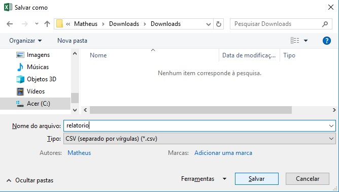

Acesso Ao Sistema
A aplicação está disponível e pode ser acessada pelo endereço www2.bcc.unifalmg.edu.br/ahp.
Criando Análise
Clicar no botão na barra de navegação.
Após ser redirecionado para nova tela, você deverá clicar no botão + Critério, e completar os dados de cada critério da sua avaliação, os dados necessários são: o nome do critério, peso, e indicar se quanto maior melhor, ou quanto menor melhor.
Após preenchido todos os critérios, você deve inserir os itens quem você quer comparar, clicando no botão + Item para adiciona-los indicando o nome de cada item da sua avaliação.
Após configurado todos itens e critéris clicar no botao Confirmar, aparecerá a nova area para preenchimento de matriz.
Montando a matriz
para montar sua matriz voce deve preencher os dados de cada item com seus respectivos criterios, cada linha da matriz representa um de seus itens. Após ter completado sua matriz você deverá clicar no botão Executar.
Resultados
Após ter clicado no botão Executar, abrira um modal com o resultado da execução do algoritmo, neste modal será exibido a colocação, o nome do item e sua nota Final. Depois de fechar o modal, você podera tambem fazer um download da sua matriz no seu estado atual clicando no botão Exportar para Download , para futuramente recalcular os resultados sem ter que preenchê-la denovo.
Carregando Estado de Matriz
Se você fez o download do arquivo préviamente, você pode carrega-lo, primeiro abra o arquivo "relatorio.xls" pelo excel, após abri-lo você
deve clicar em "salvar como" e selecione o tipo "CSV(separado por vírgulas)(*.csv)" como na imagem a seguir, e salva-lo

Após feita a conversão você clique no botão
e depois em e selecione o arquivo "relatorio.csv"
e em seguida em Enviar e sua matriz será carregada na tela.